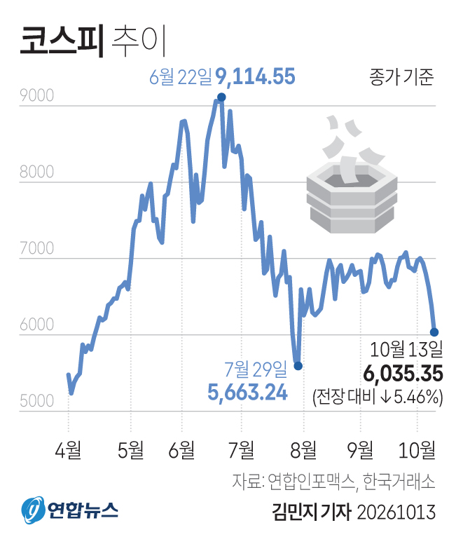
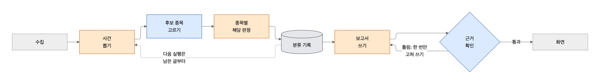

검증
- 글자 대조
- 불일치 제거
- 미확인 분리
KAKAO TECH CAMPUS 4기 - 부산대 5팀 FOMO도로
종목이 왜 움직였는지를
근거와 함께 알려주는
초보자용 주식 보고서 서비스
AI: 김수연, 이학영
BE+FE: 강무진, 최지은
BE+Infra: 안지원

01 문제 인식
시도 1
시도 2
MarketLit 흩어진 정보를 근거와 함께 정리하고, 막히는 개념은 그 자리에서 학습
01 문제 인식
#근거로 이해하는 시장#그 자리에서 배우는 용어
02 솔루션
주식 초보자를 위한 읽으며 배우는 주가 해설 서비스
MarketLit
근거와 함께 이유를 보여주고
용어는 바로 학습으로
↓
초보자가 시장을 스스로 이해
타겟 주식 입문 개인 투자자
03 차별화 & 경쟁사 분석
03 차별화 & 경쟁사 분석
| 항목 | 토스증권 | Google Finance | ChatGPT 무료 | MarketLit |
|---|---|---|---|---|
| 근거+출처 제공 | AI 시그널출처 표시 | 답변에 인용 | 출처 링크사용량 제한 | 인용 + 글자 대조 검증 |
| 용어 학습 연결 | 따로 검색 필요 | 직접 질문해야 함 | 직접 질문해야 함 | 개념과 퀴즈 제공 |
| 초보자 이해도 | 한자어가 많아 용어 어려움 | 질문 필요 | 질문 필요 | 개념 설명 포함 |
04 시연 영상 · 3분
05 AI 에이전트
05 AI 에이전트

출처별 수집
사건 추출 · 종목 연결
입력 조립
생성 · 수리 · 검증 · 적재
05 AI 에이전트 · ① 수집

LLM 호출코드 처리대체 경로멈춤 · 제외
05 AI 에이전트 · ② 분류

LLM 호출코드 처리대체 경로멈춤 · 제외
05 AI 에이전트 · ③ 어댑터

LLM 호출코드 처리대체 경로멈춤 · 제외
05 AI 에이전트 · ④ 보고서 생성기 (1)

LLM 호출코드 처리대체 경로멈춤 · 제외
05 AI 에이전트 · ④ 보고서 생성기 (2)

LLM 호출코드 처리대체 경로멈춤 · 제외
06 평가
근거 없는 원인 후보
9 → 2
07 확장 및 고도화
MarketLit
주식 초보자를 위한 읽으며 배우는 주가 해설 서비스